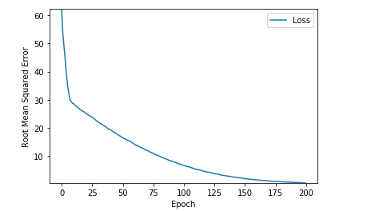

Regressão Linear com TensorFlow. O essencial.
Introdução
Podemos definir um algoritmo de machine learning como um algoritmo que é capaz melhorar a capacidade computacional de um programa a executar determinada tarefa através da experiência.Sendo esta definição um pouco abstracta, vamos apresentar um exemplo concreto: regressão linear.
Como o nome indica, o objectivo é construir um sistema que receba um vector \(\mathbf x \in R^n\) como input e prever o valor de um escalar \(y \in R\) como output. O output da regressão linear é uma função linear do input.
Seja \(\hat y\) o valor que o nosso modelo prevê que o valor real \(y\) deve tomar. Podemos definir o output como:
\[\hat y = \mathbf w^T \mathbf x\]
onde \(\mathbf w \in R^n\) é o vector de parâmetros.Os parâmetros são os valores que controlam o comportamento do sistema. Neste caso, \(w_i\) é o coeficiente que multiplicamos pelo valor de entrada (feature) \(x_i\) antes de somarmos todas as contribuições de todos os valores de entrada. Podemos pensar em \(\mathbf w\) como um conjunto de pesos que determinam como cada valor de entrada afecta a previsão.
Se um valor de entrada \(x_i\) recebe um peso positivo \(w_i\), então, aumentando esse valor vai provocar um aumento no valor previsto \(\hat y\).
Se um valor de entrada \(x_i\) recebe um peso negativo \(w_i\), então, aumentando esse valor vai provocar um decréscimo no valor previsto \(\hat y\).
Desta forma temos a definição da nossa tarefa T: prever \(y\) a partir de \(\mathbf x\) usando \(\hat y = \mathbf w^T\mathbf x\).
O próximo passo é deifinir uma medida de performance P.
\[ MSE_{test} = \frac{1}{m} \sum_i (\mathbf{ \hat y}^{(test)} - \mathbf{y}^{(test)})^2_i\]
ou, alternativamente
\[ MSE_{test} = \frac{1}{m} \| \mathbf{ \hat y}^{(test)} - \mathbf{y}^{(test)}\|^2_2\]
Procedimento
Para fazermos um algoritmo de machine learning, temos de desenhar um algoritmo que melhore os pesos \( \mathbf w\) de uma maneira que reduza o \( MSE_{test} \) quando é permitido ao algoritmo ganhar experiência através da observação do conjunto de dados de treino \( (\mathbf X^{(train)}, \mathbf Y^{(train)}) \).A forma mais natural de minimizar este erro é obter o gradiente e igualá-o a zero:
\[ \nabla_w MSE_{train} = 0 \] \[ \Rightarrow \nabla_w \frac{1}{m} \| \mathbf{ \hat y}^{(train)} - \mathbf{y}^{(train)}\|^2_2 = 0\] \[ \Rightarrow \frac{1}{m} \nabla_w \| \mathbf X^{(train)} \mathbf w - \mathbf{y}^{(train)}\|^2_2 = 0\] \[ \Rightarrow \mathbf w = (\mathbf X^{(train)T} \mathbf X^{(train)})^{-1} \mathbf X^{(train)T} \mathbf y^{(train)} \]
Vale a pena referir que o termo regressão linear é usado exprimir um modelo ligeiramente mais sofisticado, com um parâmetro adicional - um termo de intersecção \(b\):\[\hat y = \mathbf w^T \mathbf x + b\]
TensorFlow
Tentando manter as coisas simples, vamos usar TensorFlow para converter graus Celsius para Fahrenheit. A fórmula aproximada é:\[ f = 1.8c + 32\]
o exercício será passarmos ao TensorFlow uma amostra de dados Celcius e os seus correspondentes Fahrenheit. Depois, treinamos um modelo que replique a fórmua supra de conversão, através de um processo de treino.1 - Importar dependências
import tensorflow as tf import numpy as np
2 - Preparar o conjunto de dados de treino
Este é um algoritmo de machine learning supervisionado porque vamos mostrar ao modelo alguns exemplos de conversão e queremos que ele nos dê uma fórmula generalizada:celsius_q = np.array([-40, -10, 0, 8, 15, 22, 38], dtype=float) fahrenheit_a = np.array([-40, 14, 32, 46, 59, 72, 100], dtype=float)NOTA: Alguma terminologia para o que se segue:
- Feature - os valores de input para o nosso modelo. Neste caso é um só valor: os graus em Celcius.
- Labels - o output que o nosso modelo vai prever. Neste caso é um só valor: os graus em Fahrenheit.
- Exemplo - um par de valores input/output usados na fase de treino. Neste caso é um par de valores (Celcius, Fahrenheit)
3 - Criar o modelo
O passo seguinte é criar o modelo. Como este é um problema muito simples basta-nos criar uma rede com uma única camada e um único nó.3.1 - Construir a camada (layer)
l0 = tf.keras.layers.Dense(units=1, input_shape=[1])onde
- l0: Nome da camada
- input_shape=[1]: Especifica que o input desta camada é um único valor, ou seja, a forma é um array de uma dimensão com um membro. O valor é do tipo float e representa os graus Celcius
- units=1:Especifica o número de neurónios (ou nós, ou unidades) na camada. O número de neurónios define quantas variáveis internas a camada tem para tentar resolver o problema
3.2 - Adicionar a camada ao modelo
Uma vez definidas as camadas, podemos adicioná-las ao modelo. O modelo sequencial recebe uma lista de camadas como argumento que especifica a ordem de cálculo desde o input até ao output. No nosso caso só temos uma camada:model = tf.keras.Sequential([l0])
4 - Compilar o modelo com as funções de perda e otimizador
Antes de treinar o modelo, é necessário compilar, definindo duas funções importantes:- Função de perda (loss function): uma forma de medir o quão afastado está o valor previsto pela rede do valor real. Neste caso faz sentido usar o erro quadrático médio.
- Função otimizadora: uma forma de ajustar os valores internos de forma a reduzir a perda.
model.compile(loss='mean_squared_error', optimizer=tf.keras.optimizers.Adam(0.1))Estas funções serão utilizadas durante a fase de treino (model.fit()), primeiro para calcular a perda em cada ponto e posteriormente melhorá-la.
Note-se que o otimizador Adam, recebe um argumento, o learning rate. Este é um hyperparâmetro e representa o comprimento do passo a ser dado, em cada iteração, quando o modelo ajusta os seus valores. Normalmente escolhemos um valor entre 0.001 e 0.1.
5 - Treinar o modelo
O treino do modelo é feito invocando o método fit().Durante o treino o modelo vai receber os valores em graus Celcius, fazer algumas contas usando os pesos e retorna como output o que ele considera ser a conversão para Fahrenheit. Como os pesos vão ser inicializados com valore aleatórios, o primeiro output não vai ter nada a ver com o valor correcto da conversão. Depois é utilizada a função de perda para calcular o quão afastado o outuput está do valor real. Por fim a função de otimização reajusta os pesos de forma a aproximar o output do valor real.
Este ciclo de calcular, comparar e ajustar é controlado pelo ḿétodo fit(): o primeiro argumento são os inputs (graus Celcius), o segundo argumento são os outputs desejados (graus Fahrenheit). O argumento epochs especifica quantas vezes este ciclo deve ser executado
history = model.fit(celsius_q, fahrenheit_a, epochs=500, verbose=False)
6 - Mostrar as estatísticas do treino
O método fit() retorna um objecto de histórico. Podemos usar este objecto para analisar como é que a perda evolui ao longo das épocas.Uma perda elevada diz-nos que a conversão para Fahrenheit prevista pelo nosso modelo está longe do valor verdadeiro. Vejamos o aspeto da curva de perda:
import matplotlib.pyplot as plt
plt.xlabel('Epoch')
plt.ylabel("Root Mean Squared Error")
plt.plot(history.history['loss'])

6 - Usar o modelo para fazer previsões
Com o modelo treinado, estamos em condições de fazer previsões, i.e., apresentar um determinado valor (graus Celcius) à rede neuronal e obter o respetivo valor em Fahrenheit.Por exemplo, 100º Celcius corresponde a quantos graus Fahrenheit? Note-se que este valor não foi apresentado à rede na fase de treino.
print(model.predict([100.0]))[[211.75616]]
A resposta correta (utilizando a fórmula de conversão), é:
100×1.8+32=212
Não está nada mal!Resumindo:
- Criar o modelo
- Treinar o modelo com 35000 exemplos (7 pares em 500 épocas)
Por último podemos ver os valores finais dos pesos determinados pela rede:
print("These are the layer variables: {}".format(l0.get_weights()))
[array([[1.7974412]], dtype=float32), array([31.949804], dtype=float32)]
A primeira variável está próxima de \(~1.8\) e a segunda, próxima de \(~32\). Estes valores (\(1.8\) e \(32\)) são os valores da fórmula de conversão.
O código completo está aqui: Linear_Regression_Tensorflow.ipynb